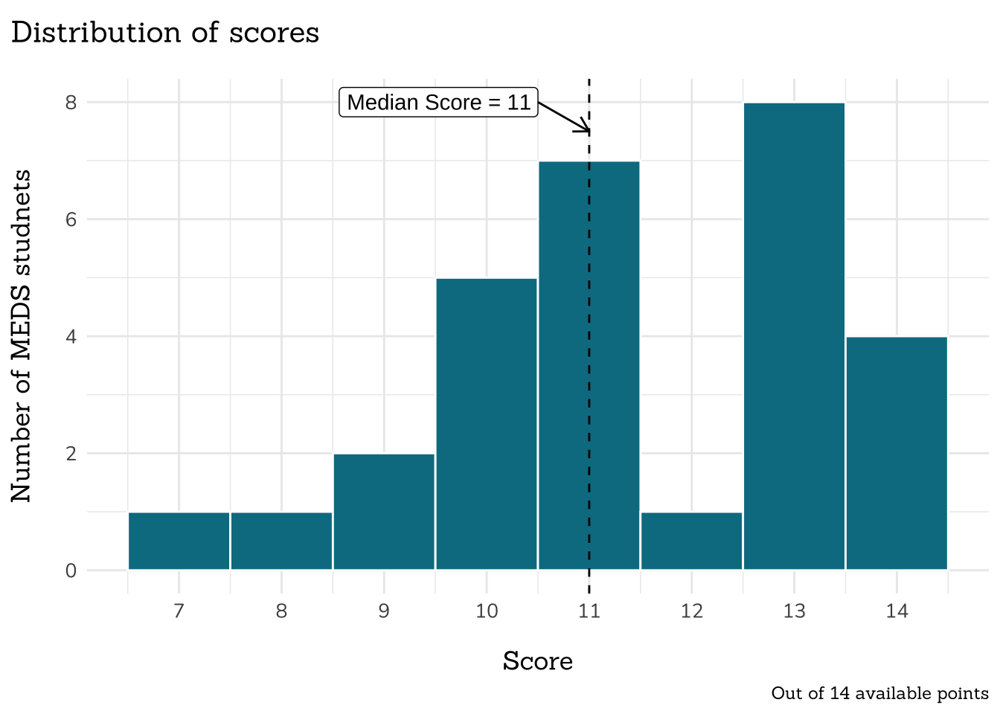
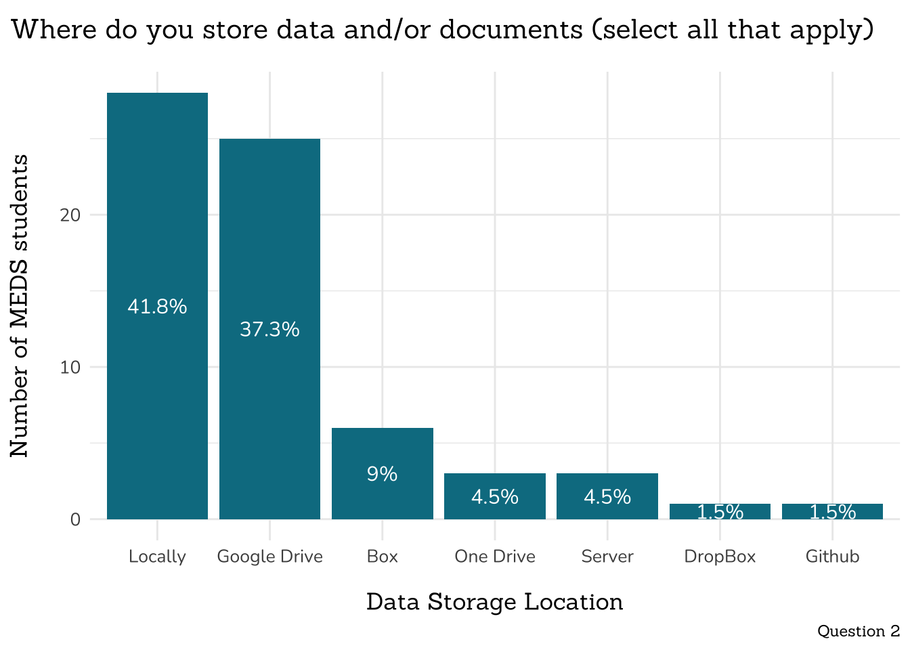
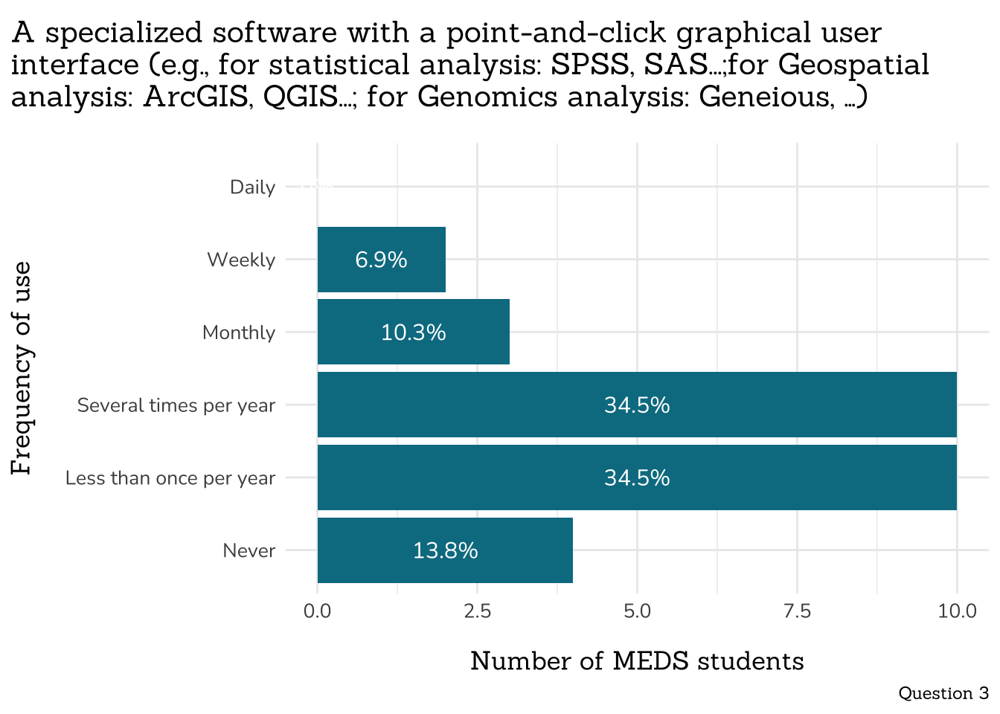

Master of Environmental Data Science (MEDS)
Program Learning Outcome (PLO) #1 Assessment - Core Knowledge
Background
Who is this survey for?
All students enrolled in the Master of Environmental Data Science (MEDS) program during the 2023 - 2025 academic years will receive this survey to complete just before beginning the program and just after completing the program.
What is a PLO and where can I find the MEDS PLO?
Each degree-granting program at UCSB has its own list of educational aims: the conceptual knowledge, practical skills, experiences, perspective-awareness, and/or values that students will be familiar with by the time they complete the program. These Program Learning Outcomes (PLOs) are defined by department faculty and approved by the Council on Assessment and the Academic Senate’s Graduate Council. Find the approved PLO for the Master of Environmental Data Science program.
How are PLOs assessed?
Departments self-assess their PLO performance on a three-year cycle. A single educational aim is assessed in a cycle.
What does that mean for the MEDS program?
Bren has entered its assessment cycle, which will last from 2023 - 2025. During this 3-year span, MEDS PLO 1 (Core Knowledge) will be assessed by delivering a pre- and post-program survey to MEDS students in the form of a Qualtrics survey. This survey is not a test of individual students, but rather an assessment of the MEDS program.
End of Year Responses
This PLO assessment was administered to the MEDS class of 2023 (response rate = 29 / 31 students) on June 7, 2023.
Heads-up! No pre-MEDS PLO assessment data for the Claass of 2023
This assessment of MEDS PLO #1 (Core Knowledge) was developed by the MEDS Curriculum Cohesion Committee in winter/spring 2023, and therefore was not administered to the MEDS Class of 2023 before beginning the program in August 2022 (i.e. no pre-program assessment was conducted). No benchmark data is available for the Class of 2023.
Part 1 – OS and data/document storage

Part 2 – How often do you currently use the following?:




Part 3 – Workflow satisfaction

Part 4 (Questions 9 - 15) – Rank the following from 1 (strongly disagree) to 5 (strongly agree):


Part 5: Stats
- Consider the following sample of data: 5, 17, 0, 14, 14
- What is the median of this sample distribution?
- What is the mode of this sample distribution?
- How familiar are you with the term linear regression?
- Below is a chunk of code showing a simple linear regression relating the number of pieces of microplastics to the number of days per year with rainfall. How many pieces of microplastic do we predict will be present in a location with 45 days of rain per year (round your answer up to the nearest integer)? INSERT SCREENSHOT HERE
- How familiar are you with probability distributions?
- Which of the following terms are used to describe probability distributions (select all that apply; options: uniform, unequal, bimodal, variable, symmetric)?
Part 6: Programming
- How familiar are you with the term function as it relates to programming (1, never heard of it - 5, very familiar)?
- How comfortable are you creating a function in code (1, not at all comfortable - 5, very comfortable)?
- The following code (in R) defines a function: INSERT SCREENSHOT HERE This R code applies this function to data: INSERT SCREENSHOT HERE What is the value of power_turbine_A?
Part 7: Environmental Modeling
- Have you run a model to learn something about (or predict something about) the environment?
- Have you done a sensitivity analysis to assess how model results change with changes in inputs or parameters? If you want to explore how parameter interactions impact model results, you would do?
Part 8: Geospatial Analysis & Remote Sensing
- How comfortable are you working with spatial data?
- What are the two primary ways of representing spatial data (select two; options: raster, tabular, relational, vector, I’m not sure):
- Is the following a vector or raster? INSERT SCREENSHOT HERE
- How comfortable are you working with remotely sensed data?
- The type of remote sensing that relies on reflected radiation generated by the sun is called ___? (fill in the blank)
- How comfortable are you working with map projections?
- Converting from a geographic to projected coordinate system reprojects data from ___ (fill in the blank).
- How familiar are you with the term reflectance spectra?
- Of the following wavelengths, which one does vegetation reflect the most?
Part 9: Machine Learning
- How familiar are you with the difference between supervised and unsupervised learning (1, never heard of either of those terms - 5, very familiar with both concepts and how they differ)?
- Have you ever implemented an unsupervised learning algorithm (1, definitely not - 3 (maybe, but I’m not sure - 5, yes)?
- K-means clustering is an example of a(n) ___ learning approach because it ___ (fill in the blanks).
- How familiar are you with the procedure that divides your data into separate “training”, “validation”, and “testing” sets (1, ever heard of it - 3, vague sense of what it means - 5, very familiar)?
- How often have you implemented a train, validation, test split (1, ever - 5, all the time)?
- If my model performs very well in my training set, moderately well in my validation set, and poorly in my test set, what do I learn from this (choose all that apply)?
Part 10: Environmental Justice
- How familiar are you with the term Data Justice (1, ever heard of it - 3, vague sense of what it means - 5, very familiar)?
- I can identify areas of bias in approaches to data analysis (1, strongly disagree - 3, neutral - 5, strongly agree).
Part 11: Data Viz & Communication
- How comfortable are you with creating a data visualization using a programming language (1, never done it before - 5, very comfortable, do it often)?
- Identify 4 areas for improvement in the following data visualization that shows information about Michigan counties with highest college attendance.
- How familiar are you with the difference between supervised and unsupervised learning? INSERT SCREENSHOT HERE
Part 13: Programming 2
- What programming language is this code written in?
# define function
def convert_F_to_C(temp_F):
temp_C = (temp_F-32)*5/9
return temp_C
# use function
convert_F_to_C(32)